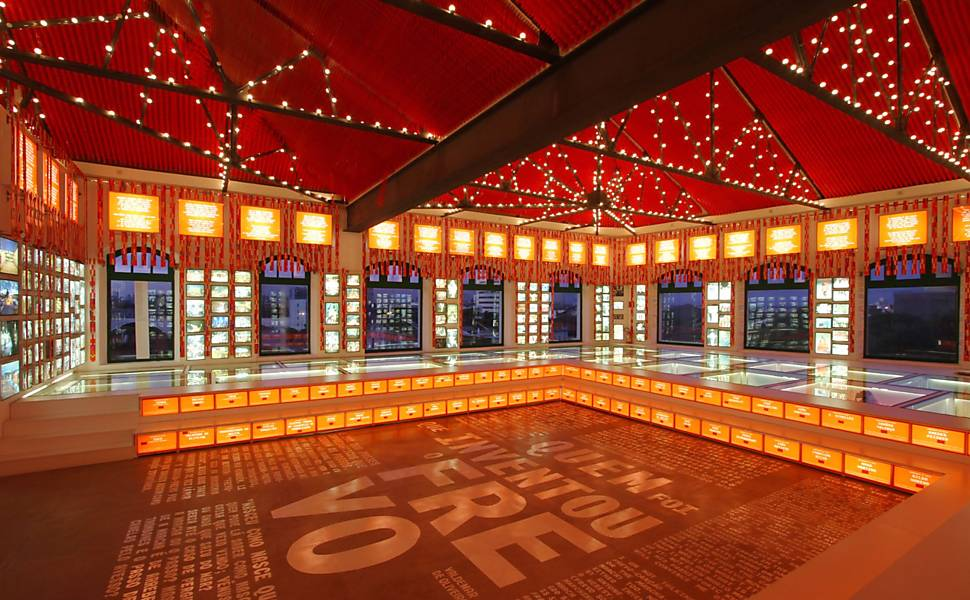
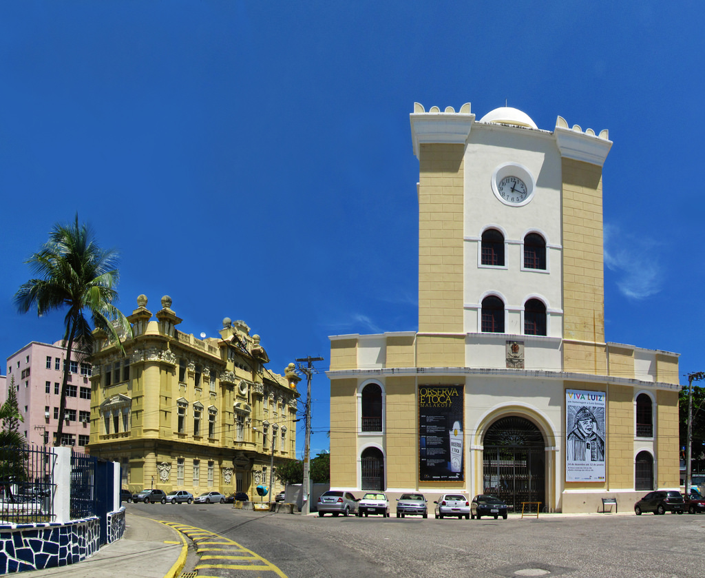

Paço do Frevo
O Paço do Frevo em Recife é um ponto turístico importante na cidade.
Oferece exposições permanentes e temporárias, atividades educativas, apresentações de dança e música ao vivo, além de um acervo com mais de 2 mil itens relacionados ao Frevo, como instrumentos musicais, figurinos, fotografias, partituras e vídeos. É um lugar muito interessante para quem quer conhecer mais sobre essa importante manifestação cultural do Nordeste brasileiro.
Torre Malakoff
A Torre Malakoff é um dos principais pontos turísticos do Recife Antigo e um lugar interessante para conhecer a história e a cultura de Recife.
Abriga um centro cultural e de exposições, que promove eventos culturais e exposições de arte, fotografia e história. A arquitetura com um estilo neoclássico, a torre possui um terraço com vista para o Rio Capibaribe e a cidade do Recife.